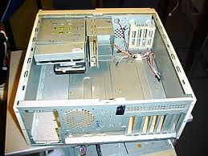

Chassi
Chassit är datorn "kropp", alltså datorns utseende utåt.
Chassit innehåller datorns alla beståndsdelar av datorn som, t.ex moderkort och grafikkort.Ute på internet och i affärer finns det en uppsjö av olika sorters chassin, det finns chassin som är riktade för människor som spelar eller för "svensson".
Skillnaderna mellan ett chassi för spelare mot chassin för personer som bara använder datorn för att streama eller googla är att chassin för spelning är utvecklade speciellt för att kyla datorn bättre gentemot standard chassin. Men varför behövs en speldator bättre kylning? Jo, eftersom en speldator består av bättre delar som utvecklar större värme vilket behöver bättre ventilation i chassit.
Vad ska man då tänka på innan man köper chassi?
Innan du köper ditt chassi ska du fundera över hur du kommer att använda datorn.Kommer du spela mycket? Ja då ska du köpa ett stort chassi med bra ventilation, då du får plats med mycket delar som går att kyla.
Eller kommer du bara använda internet? Köp då ett kompakt och så litet chassi som möjligt men som ändå rymmer dina delar.
Det är viktigt att köpa ett chassi som passar med resten av dina komponenter. 